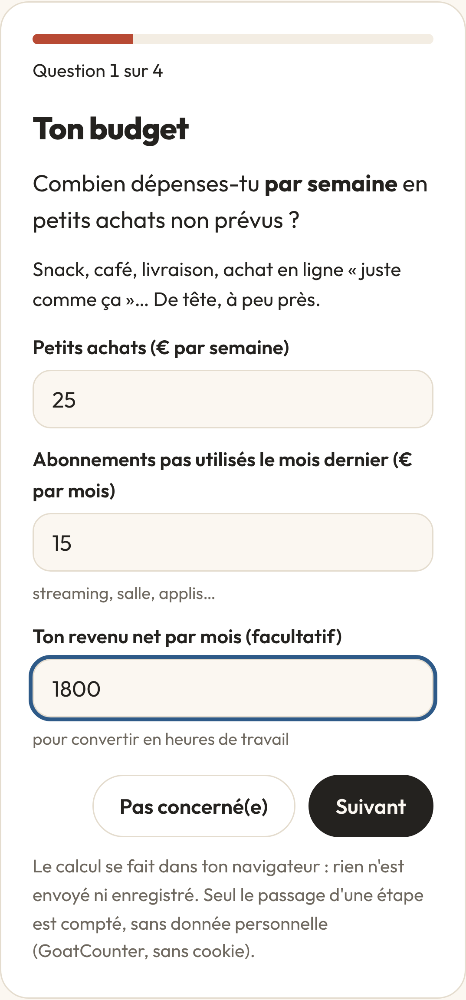
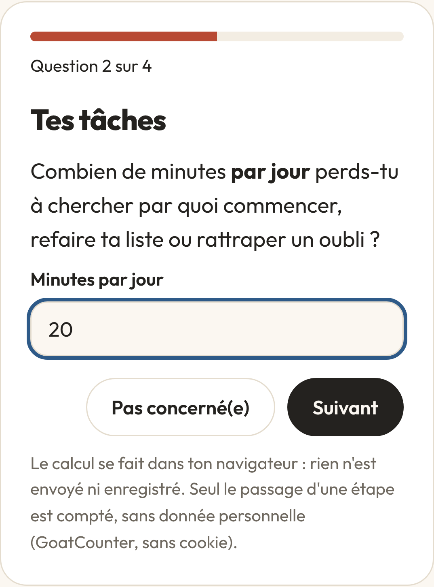
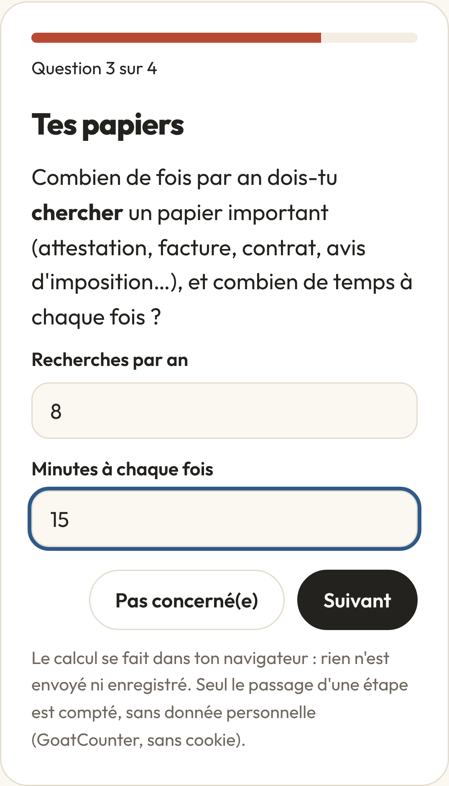
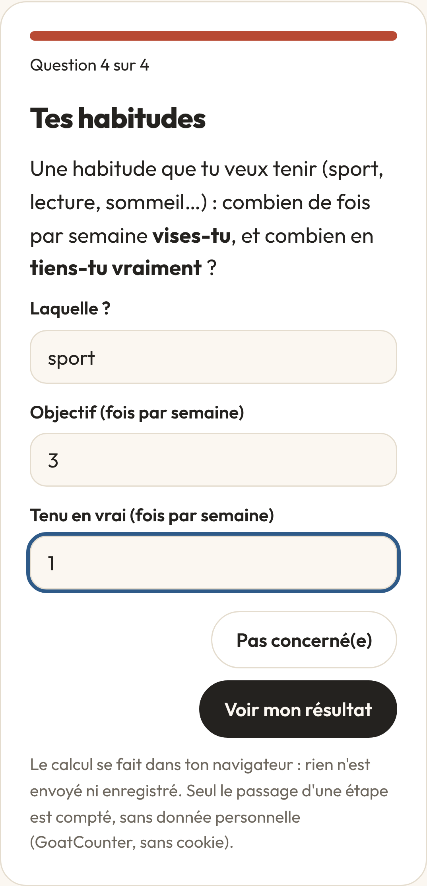
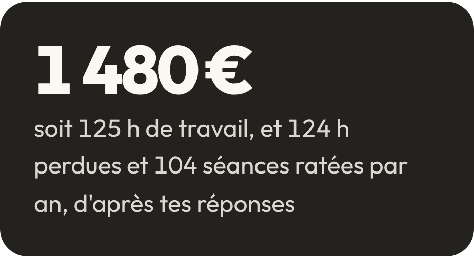

Test gratuit · 4 questions
Votre désorganisation vous coûte combien par an ?
Test en 1 minute. Exemple fictif, réponse à la fin.
1/4Le budget
25 € de petits achats par semaine, 15 € d'abonnements oubliés
Capture réelle de la page · données fictives

2/4Les tâches
20 minutes par jour à chercher par quoi commencer
Capture réelle de la page · données fictives

3/4Les papiers
8 papiers cherchés par an, 15 minutes à chaque fois
Capture réelle de la page · données fictives

4/4Les habitudes
Sport : 3 séances visées par semaine, 1 tenue
Capture réelle de la page · données fictives

Le résultat · par an

Le calcul de la page, pour ces réponses fictives
Et vous, combien ?
Faites le test : 1 minute, gratuit.
qm-engineering.fr/diagnostic